This document explains how crystallographic point and space groups are used in Mantid. The document about symmetry operations, elements and groups is a prerequisite for this text, so it is recommended to read it beforehand.
As explained in the general text covering symmetry groups, groups are used to describe symmetry of objects in space. For crystallography, point and space groups are essential tools to describe crystal structures and aspects of diffraction experiments. According to the definition given in the International Tables for Crystallography A, a “point group is a group of symmetry operations all of which leave at least one point unmoved” [ITAPointGroups]. This means that only symmetry operations without a translational component are allowed, which leaves only rotations  ,
,  ,
,  ,
,  ,
,  and roto-inversions
and roto-inversions  ,
,  ,
,  ,
,  and mirror planes
and mirror planes  . In space groups, translational symmetry is present as well (for example in the form of screw axes and glide planes).
. In space groups, translational symmetry is present as well (for example in the form of screw axes and glide planes).
In three dimensions there are 32 crystallographic point groups and in 11 of these an inversion center () is present. These so called Laue classes are important for diffraction experiments because Friedel’s law defines that diffraction patterns always show a center of symmetry if anomalous dispersion is not taken into account.
Through the presence of certain symmetry operations in certain directions, the Laue classes (and also the point groups) can be categorized into seven crystal systems (see table below). This information is included in the Hermann-Mauguin symbol, which describes symmetry along different directions, depending on the crystal system.
| Crystal system | Laue classes | Point groups |
|---|---|---|
| Cubic |  , 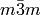 , 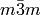 |
 , , , ,  , ,  , , |
| Hexagonal |  , ,  |
, , , 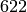,  , ,  , ,  , , |
| Trigonal | ,  |
, ,  , 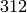, , 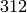,  , ,  , ,  , 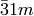 , 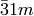 |
| Tetragonal |  , ,  |
, , , 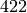,  , ,  , 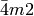, , 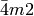, |
| Orthorhombic |  |
 , ,  , , |
| Monoclinic |  |
, , |
| Triclinic | |
, |
Any point group can be generated by using a maximum of three symmetry operations as so-called generators using the principle described in [Shmueli84]. According to this, any point group can be described either as a cyclic group or as a product of maximum three cyclic groups. The point group is an example for a group that is simply a cyclic group generated from a positive four fold rotation axis along the  -axis, which has the order 4.
-axis, which has the order 4.

So by specifying one single symmetry operation as generator, all symmetry operations of the point group in question are generated. From this it’s convenient to expand the example to generate a point group that can be expressed as the product of two cyclic groups - . In this point group, an additional mirror plane is present perpendicular to the four fold axis. The point group can be expressed as product of shown above and a cyclic group generated by the symmetry operation (mirror plane perpendicular to ):

This means that contains an inversion center as well as a four fold rotoinversion axis which result from the combination of the operations of the two cyclic groups. It’s also possible to use a different cyclic group to achive the same result (). As mentioned above, for some point groups it’s necessary to use three generators, which follows the same principle and is not shown here.
Space groups can be handled in a very similar way if translations are limited to the interval  so that screw-axes and glide-planes can also be used to generate cyclic groups. Without this limitation, the translational components would not be the same for
so that screw-axes and glide-planes can also be used to generate cyclic groups. Without this limitation, the translational components would not be the same for  and
and  .
.
Point groups are represented in Mantid by the PointGroup-class, which is constructed for each actual point group using generators. The interface of the class consists of two parts, one for providing information about the point group and one for working with  -indices. Just as in the case of SymmetryOperation, PointGroup-objects are created using a factory, this time by supplying the short Hermann-Mauguin symbol [1] :
-indices. Just as in the case of SymmetryOperation, PointGroup-objects are created using a factory, this time by supplying the short Hermann-Mauguin symbol [1] :
from mantid.geometry import PointGroupFactory
pg = PointGroupFactory.createPointGroup("-1")
print "Name:", pg.getName()
print "Hermann-Mauguin symbol:", pg.getHMSymbol()
print "Crystal system:", pg.getCrystalSystem()
When this code is executed, some information about the point group is printed:
Name: -1 (Triclinic)
Hermann-Mauguin symbol: -1
Crystal system: Triclinic
It’s possible to query the factory about available point groups. One option returns a list of all available groups, while another possibility is to get only groups from a certain crystal system:
from mantid.geometry import PointGroupFactory, PointGroup
print "All point groups:", PointGroupFactory.getAllPointGroupSymbols()
print "Cubic point groups:", PointGroupFactory.getPointGroupSymbols(PointGroup.CrystalSystem.Cubic)
print "Tetragonal point groups:", PointGroupFactory.getPointGroupSymbols(PointGroup.CrystalSystem.Tetragonal)
Which results in the following output:
All point groups: ['-1','-3','-3 r','-31m','-3m','-3m r','-3m1','-4','-42m','-43m','-4m2','-6','-62m','-6m2','1','112/m','2','2/m','222','23','3','3 r','312','31m','32','32 r','321','3m','3m r','3m1','4','4/m','4/mmm','422','432','4mm','6','6/m','6/mmm','622','6mm','m','m-3','m-3m','mm2','mmm']
Cubic point groups: ['-43m','23','432','m-3','m-3m']
Tetragonal point groups: ['-4','-42m','-4m2','4','4/m','4/mmm','422','4mm']
The point groups with an extra r at the end are trigonal point groups with rhombohedral axes. Trigonal point groups without that additional letter use the hexagonal coordinate system. For some of them there are two different axis choices, for example , which can be defined as or . Creating it by the symbol -3m defaults to .
After having obtained a PointGroup-object, it can be used for working with reflection data, more specifically -indices. It’s possible to check whether two reflections are equivalent in a certain point group:
from mantid.geometry import PointGroupFactory
pg = PointGroupFactory.createPointGroup("m-3m")
hkl1 = [2, 0, 0]
hkl2 = [0, 0, -2]
hkl3 = [0, 1, 2]
print "Are [2,0,0] and [0,0,-2] equivalent?", pg.isEquivalent(hkl1, hkl2)
print "Are [2,0,0] and [0,1,2] equivalent?", pg.isEquivalent(hkl1, hkl3)
Are [2,0,0] and [0,0,-2] equivalent? True
Are [2,0,0] and [0,1,2] equivalent? False
Another common task is to find all symmetry equivalents of a reflection, for example to determine its multiplicity. PointGroup has a method for this purpose which returns the set of non-identical symmetry equivalents for a given (including itself):
from mantid.geometry import PointGroupFactory
pg = PointGroupFactory.createPointGroup("m-3m")
hkl1 = [2, 0, 0]
equivalents1 = pg.getEquivalents(hkl1)
print "Number of reflections equivalent to [2,0,0]:", len(equivalents1)
print "Equivalents:", equivalents1
print
hkl2 = [1, 1, 1]
equivalents2 = pg.getEquivalents(hkl2)
print "Number of reflections equivalent to [1,1,1]:", len(equivalents2)
print "Equivalents:", equivalents2
Executing this code results in the following output:
Number of reflections equivalent to [2,0,0]: 6
Equivalents: [[2,0,0], [0,2,0], [0,0,2], [0,0,-2], [0,-2,0], [-2,0,0]]
Number of reflections equivalent to [1,1,1]: 8
Equivalents: [[1,1,1], [1,1,-1], [1,-1,1], [1,-1,-1], [-1,1,1], [-1,1,-1], [-1,-1,1], [-1,-1,-1]]
Sometimes, a list of reflections needs to be reduced to a set of symmetry independent reflections only. That means it should not contain any two reflections that are symmetry equivalents according to the point group symmetry. To achieve this, PointGroup offers a method that returns the same  for all symmetry equivalents.
for all symmetry equivalents.
from mantid.geometry import PointGroupFactory
pg = PointGroupFactory.createPointGroup("m-3m")
hklList = [[1, 0, 0], [0, 1, 0], [-1, 0, 0], # Equivalent to [1,0,0]
[1, 1, 1], [-1, 1, 1], # Equivalent to [1,1,1]
[-3, 1, 1], [1, -3, 1], [-1, 1, 3]] # Equivalent to [3,1,1]
independent = set()
for hkl in hklList:
independent.add(pg.getReflectionFamily(hkl)) # getReflectionFamily returns the same hkl for all symmetry equivalents
print "Number of independent reflections:", len(independent)
print "Reflections:", list(independent)
This example code produces the output below upon execution:
Number of independent reflections: 3
Reflections: [[1,1,1], [1,0,0], [3,1,1]]
This is all that’s covered by the Python interface regarding point groups in Mantid at the time of this writing. The use in C++ is very similar and described in detail in the API documentation.
Space group representation in Mantid is very similar to the point group representation, there is a SpaceGroup-class that contains some information about the group, but also a method to generate equivalent positions from a coordinate triplet.
Exactly like point groups, space groups are also created using a factory:
from mantid.geometry import SpaceGroupFactory
sg = SpaceGroupFactory.createSpaceGroup("P -1")
print "Hermann-Mauguin symbol:", sg.getHMSymbol()
print "ITA number:", sg.getNumber()
Executing this code shows the Hermann-Mauguin symbol of the space group as well as the number defined in ITA:
Hermann-Mauguin symbol: P -1
ITA number: 2
For some space group types there is more than one setting. Even though these are not present in Mantid at the time of this writing, the factory already supports querying the available symbols for a given number:
from mantid.geometry import SpaceGroupFactory
print "Space group no. 2:", SpaceGroupFactory.subscribedSpaceGroupSymbols(2)
print "Total subscribed space group types:", len(SpaceGroupFactory.getAllSpaceGroupNumbers())
This shows that only one symbol is registered for space group number 2, and that there are 230 space group types:
Space group no. 2: ['P -1']
Total subscribed space group types: 230
Besides containing some very basic information, the most important functionality is the ability to generate equivalent coordinates. The following example generates all coordinates for the  position in space group 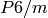 (No. 175):
position in space group 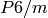 (No. 175):
from mantid.geometry import SpaceGroupFactory
sg = SpaceGroupFactory.createSpaceGroup("P 6/m")
position = [1./3., 2./3., 0.25]
equivalents = sg.getEquivalentPositions(position)
print "There are", len(equivalents), "equivalent coordinates."
print "Coordinates:"
for i, pos in enumerate(equivalents):
print str(i + 1) + ":", pos
Please note that for hexagonal and trigonal space groups, where translations of  ,
,  ,
,  and so on are common, these coordinates must be supplied either as 1./3. or with a precision of 7 digits, e.g. 0.6666667.
and so on are common, these coordinates must be supplied either as 1./3. or with a precision of 7 digits, e.g. 0.6666667.
There are 4 equivalent coordinates.
Coordinates:
1: [0.333333,0.666667,0.25]
2: [0.333333,0.666667,0.75]
3: [0.666667,0.333333,0.25]
4: [0.666667,0.333333,0.75]
Furthermore, it is possible to create a PointGroup-object from a SpaceGroup object in order to obtain information about the crystal system and to perform the Miller index operations provided by PointGroup. For this, PointGroupFactory has a special method:
from mantid.geometry import PointGroupFactory, SpaceGroupFactory
# Create space group Fd-3m (for example silicon or diamond)
sg = SpaceGroupFactory.createSpaceGroup("F d -3 m")
pg = PointGroupFactory.createPointGroupFromSpaceGroup(sg)
print "Space group no.", sg.getNumber(), "has point group:", pg.getHMSymbol()
The script prints the point group of the space group in question:
Space group no. 227 has point group: m-3m
Very similar constructions are available in C++ as well, as shown in the API documentation.
The previous two sections demonstrated how to perform common tasks using point and space groups in Mantid. With the available Python tools it is however possible to obtain other information as well. One useful method that both PointGroup and SpaceGroup expose is to query the symmetry operations of the group, although in string format:
from mantid.geometry import SpaceGroupFactory
sg = SpaceGroupFactory.createSpaceGroup("P 6/m")
symOpStrings = sorted(sg.getSymmetryOperationStrings())
print "There are", len(symOpStrings), "symmetry operations in space group", sg.getHMSymbol() + "."
print "Symmetry operations:", symOpStrings
Which prints the symmetry operation information:
There are 12 symmetry operations in space group P 6/m.
Symmetry operations: ['-x+y,-x,-z', '-x+y,-x,z', '-x,-y,-z', '-x,-y,z', '-y,x-y,-z', '-y,x-y,z', 'x,y,-z', 'x,y,z', 'x-y,x,-z', 'x-y,x,z', 'y,-x+y,-z', 'y,-x+y,z']
While this can be interesting for informational purposes, it’s more useful to obtain the symmetry operations directly as objects to use them for new purposes. This script for example sorts the contained symmetry operations according to their order:
from mantid.geometry import SpaceGroupFactory
def getMaximumOrderOperation(spaceGroup):
return sorted(spaceGroup.getSymmetryOperations(), key=lambda x: x.getOrder())[-1]
sg1 = SpaceGroupFactory.createSpaceGroup("P 6/m")
sg2 = SpaceGroupFactory.createSpaceGroup("P 4 3 2")
# Get the symmetry operation with the highest order
symOpMax1 = getMaximumOrderOperation(sg1)
symOpMax2 = getMaximumOrderOperation(sg2)
print "The symmetry operation with highest order in space group no.", sg1.getNumber(), "is:", symOpMax1.getIdentifier(), "(k=" + str(symOpMax1.getOrder()) + ")"
print "The symmetry operation with highest order in space group no.", sg2.getNumber(), "is:", symOpMax2.getIdentifier(), "(k=" + str(symOpMax2.getOrder()) + ")"
Which produces the following output:
The symmetry operation with highest order in space group no. 175 is: y,-x+y,z (k=6)
The symmetry operation with highest order in space group no. 207 is: z,y,-x (k=4)
Another way to extract more information about the symmetry in a space group is to obtain the symmetry elements and arrange them by their characteristic axis:
from mantid.kernel import V3D
from mantid.geometry import PointGroupFactory, SpaceGroupFactory, SymmetryElementFactory
def getSymmetryElementsFromOperations(symmetryOperations):
return [SymmetryElementFactory.createSymElement(x) for x in symmetryOperations]
sg = SpaceGroupFactory.createSpaceGroup("P n m a")
pg = PointGroupFactory.createPointGroupFromSpaceGroup(sg)
symElements = getSymmetryElementsFromOperations(sg.getSymmetryOperations())
symElementsByAxis = {}
symElementsNoAxis = []
for symElem in symElements:
axis = pg.getReflectionFamily(symElem.getAxis())
#axis = symElem.getAxis()
# If axis is [0,0,0], put the element into the "no axis" list
if axis == V3D(0, 0, 0):
symElementsNoAxis.append(symElem)
else:
# Otherwise check if that axis is already in the dictionary with a list...
if axis in symElementsByAxis.keys():
symElementsByAxis[axis].append(symElem)
# ...or create a new list for that axis
else:
symElementsByAxis[axis] = [symElem]
noAxisSymbols = [x.getHMSymbol() for x in symElementsNoAxis]
print "There are", len(symElementsNoAxis), "element(s) with no characteristic axis."
print "Are there translations?", "Yes" if 't' in noAxisSymbols else "No"
axes = symElementsByAxis.keys()
print "There is a total of", len(axes), "different characteristic axes."
print "Symmetry in each direction:"
for axis in sorted(axes):
print str(axis) + ": ", sorted([x.getHMSymbol() for x in symElementsByAxis[axis]])
This prints the following information:
There are 2 element(s) with no characteristic axis.
Are there translations? No
There is a total of 3 different characteristic axes.
Symmetry in each direction:
[0,0,1]: ['21', 'a']
[0,1,0]: ['21', 'm']
[1,0,0]: ['21', 'n']
Looking up space group number 62 ( from the example) in ITA shows that the full Hermann-Mauguin symbol for that space group is
from the example) in ITA shows that the full Hermann-Mauguin symbol for that space group is  . The short script gives us all of this information, since there are no translations (the primitive lattice translations are implicit) it must be a primitive lattice (
. The short script gives us all of this information, since there are no translations (the primitive lattice translations are implicit) it must be a primitive lattice ( ) and all directions encoded in the HM-symbol contain a
) and all directions encoded in the HM-symbol contain a  screw axis perpendicular to a glide or mirror plane.
screw axis perpendicular to a glide or mirror plane.
| [ITAPointGroups] | International Tables for Crystallography (2006). Vol. A, ch. 10.1, p. 762 |
| [Shmueli84] |
|
| [1] | In the case of the monoclinic Laue class it’s a bit more complicated, because there are two conventions regarding the unique axis. According to current crystallographic standards, the  -axis is used, but in some cases one may find the -axis is used, but in some cases one may find the  -axis for this purpose. To resolve this, both options are offered in Mantid. When using the symbol 2/m, the -axis convention is used, for one has to explicitly provide the symbol as 112/m. -axis for this purpose. To resolve this, both options are offered in Mantid. When using the symbol 2/m, the -axis convention is used, for one has to explicitly provide the symbol as 112/m. |
Category: Concepts